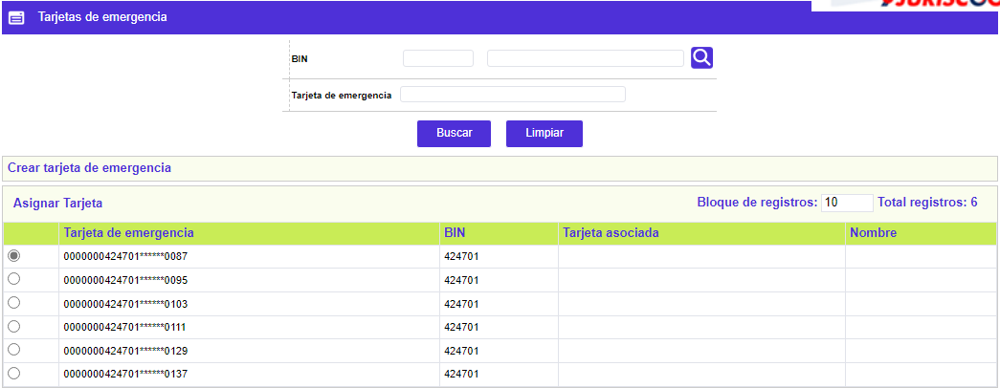
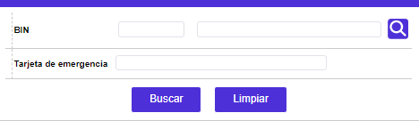
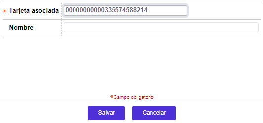

Generación tarjetas de emergencia |
A través de este formulario se generan y asignan los números de tarjetas que estarón disponibles en caso de extravío de tarjetas en el exterior y que tendrán las características propias de tarjetas de emergencia.
Estas tarjetas tienen una vida útil o tiempo de vigencia corta de acuerdo con lo que se indique para cada producto.

El formulario cuenta con un filtro que permite consultar los números de tarjeta para un bin o un número en particular.

Por medio del hipervínculo Crear tarjeta de emergencia contenido en el formulario y de acuerdo tanto con las políticas de las franquicias y con lo que se haya parametrizado en el campo Administración tarjetas emergencia, de la opción Parámetros operativos, se invocan los formulario correspondientes que permiten hacer la generación manual o automática de estas tarjetas.
El formulario sólo contiene la opción Actualizar.
Actualizar: si el usuario selecciona un registro e invoca la opción Actualizar, se despliega un formulario en el cual se registra la información de la tarjeta extraviada a la cual se le va a asignar el número de tarjeta de emergencia seleccionado.

Descripción de campos
Tarjeta asociada |
Campo obligatorio alfanumérico de 23 posiciones, obligatorio, en el cual se registra el el número de tarjeta extraviada a la cual se le va a asignar la tarjeta de emergencia. |
Nombre |
Una vez que el sistema a validado el número de tarjeta ingresado y verifica que se le puede asignar la tarjeta de emergencia, en este campo de salida se despliega el nombre del cliente titular de la misma. |